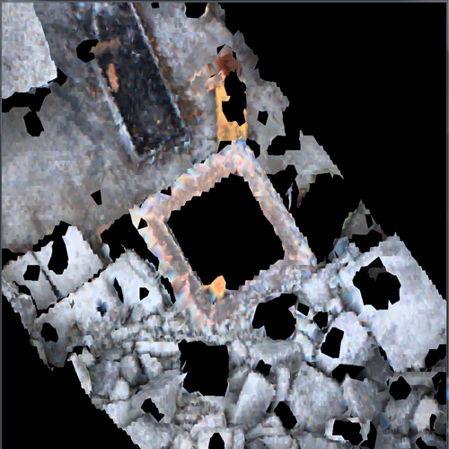

My Portfolio
Art Hackathon
예술작품이 먼저 우리에게 말을 걸어주는 아이디어 프로젝트
Android(Java), Beacon, Chatterbot, Python

3D Drone
공간 붕괴지점을 파악하는 연구과제
VS(C++), OpenGL, CGAL
I-Chess
교육용 체스 App 개발
Android(Java), PGN, FEN

Come Back Home
막차 알림 App
Android(java), SQLite, Jsoup

Cycle Assistance tools
자전거 사용자의 팔 동작을 인식한 방향 표시 App
Android(java), Matlab, Sensor Dashboard

beats
아두이노용 비트보드
Arduino
About Me
책과 다양한 경험을 좋아하며, 다양한 사람들과 함께 개발하는 걸 좋아하는 소프트웨어 개발자입니다.
Technical Skills
Image Processing (OpenCV)
BackEnd Development (Spring Framework)
Android Development
Powered by w3.css